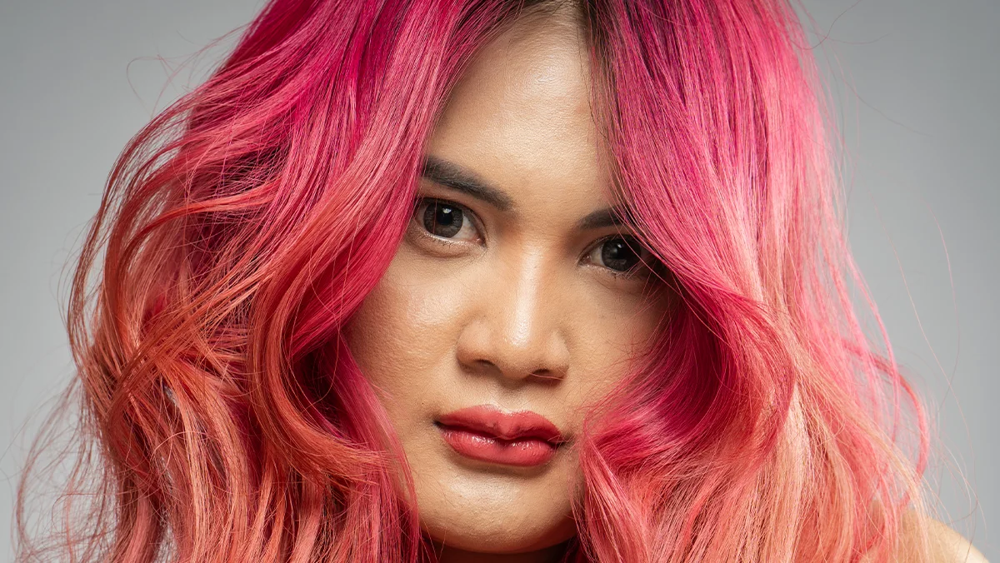

Choosing between balayage and highlights depends on the hair colour effect you want, your natural hair shade, maintenance preferences, and personal style. Balayage creates a softer, blended, sun-kissed appearance, while traditional highlights offer more defined, evenly distributed lighter sections. Both techniques add dimension and brightness to your hair, but they differ in application, finish, and upkeep.
If you are considering a hair colour transformation, understanding these differences can help you choose a technique that complements your appearance and lifestyle.
Balayage and highlights are hair colouring techniques used to create lighter sections and dimension. The main difference is how the colour is applied and how the finished look appears.
Balayage: A freehand colouring technique in which a stylist paints colour onto selected hair sections to create a gradual, blended effect.
Highlights: A technique in which selected hair strands are lightened, commonly using foils to create more consistent and defined sections.
Balayage generally produces a softer transition between shades, whereas traditional highlights can create more noticeable contrast from the roots to the ends.
Balayage is a French-inspired hair colouring technique that involves hand-painting colour onto selected strands. Instead of creating uniform sections from the roots, the stylist strategically places lighter shades throughout the hair.
This technique creates a naturally blended appearance, similar to the subtle lightening that hair can develop after sun exposure.
Key characteristics of balayage include:
Popular balayage shades include caramel, honey blonde, chocolate brown, ash blonde, and beige blonde. The right shade depends on your starting hair colour and desired result.
Hair highlights involve lightening selected strands to create contrast against the natural or base hair colour. Traditional foil highlights use foils to separate treated sections and help control the lightening process.
Unlike balayage, highlights can create a more uniform distribution of lighter strands throughout the hair, including closer to the roots.
Key characteristics of highlights include:
Highlights are suitable for people who want a more noticeable colour change while retaining dimension in their natural hair.
Understanding the practical differences can make your salon consultation easier.
| Feature | Balayage | Highlights |
|---|---|---|
| Application | Freehand painting | Sectioning, often using foils |
| Colour placement | Usually mid-lengths and ends | Can begin close to roots |
| Final appearance | Soft and blended | Defined and brighter |
| Regrowth | Usually less noticeable | Often more noticeable |
| Maintenance | Generally lower | Generally higher |
| Colour effect | Natural-looking dimension | More uniform brightness |
Neither technique is universally better. The right choice depends on your preferred finish and how much maintenance you are comfortable with.
Your preferred appearance, natural hair colour, and daily styling routine can help determine which technique is suitable.
Balayage may be a good option if you:
It is particularly popular among people with naturally dark hair who want to introduce lighter tones without losing the depth of their original colour.
Traditional highlights may suit you if you:
Highlights can also be customised with fine sections for a subtle result or thicker sections for a more dramatic transformation.
For naturally dark brown or black Indian hair, both balayage and highlights can create attractive results. However, the colour selection and lightening process need to be planned carefully.
Some popular combinations include:
The final result depends on your starting hair shade, previous colour treatments, hair condition, and the level of lightness you want. Dark hair may require more than one lightening session to achieve certain blonde shades.
A professional colour consultation helps determine which shades are achievable while considering your hair's condition.
Both techniques involve lightening selected hair sections, so proper aftercare is important for maintaining colour vibrancy and hair condition.
Follow these practical tips:
Remember that lightened hair may become dry or more fragile, particularly after repeated chemical services. Your stylist should assess its condition before recommending additional lightening.
Choosing the right technique is only one part of achieving your desired hair colour. Professional application, accurate shade selection, and an understanding of your hair history also matter.
At Frenyz Salon in Vadodara, clients can explore creative hair colouring options, including balayage, babylights, ombre, sombre, and colour melting.
The salon offers customised hair colouring services based on individual preferences, hair length, density, and desired colour results.
Before booking a colour service, discuss your reference images, previous chemical treatments, maintenance preferences, and expected results with your stylist.
Balayage and highlights are both excellent ways to add dimension and brightness to your hair, but they create different results. Balayage is ideal for softer, blended colour with less noticeable regrowth, while highlights are suitable for more defined sections and a brighter overall appearance.
The best technique is the one that complements your natural hair colour, desired style, and maintenance routine. A professional consultation can help you choose the right shades and application method for a beautiful, personalised result.
Balayage is a popular choice for dark hair because it creates soft transitions between the natural base colour and lighter shades. However, highlights are equally suitable if you want more noticeable brightness throughout your hair.
Balayage generally requires less frequent touch-ups because the colour blends more naturally with the roots. Highlights may need refreshing more regularly, depending on their placement, hair growth, and the desired appearance.
Yes, you can transition from highlights to balayage. A professional colourist can assess your existing colour and determine how to blend the lighter sections into a softer, more natural-looking finish. The process may require multiple appointments depending on your hair history.